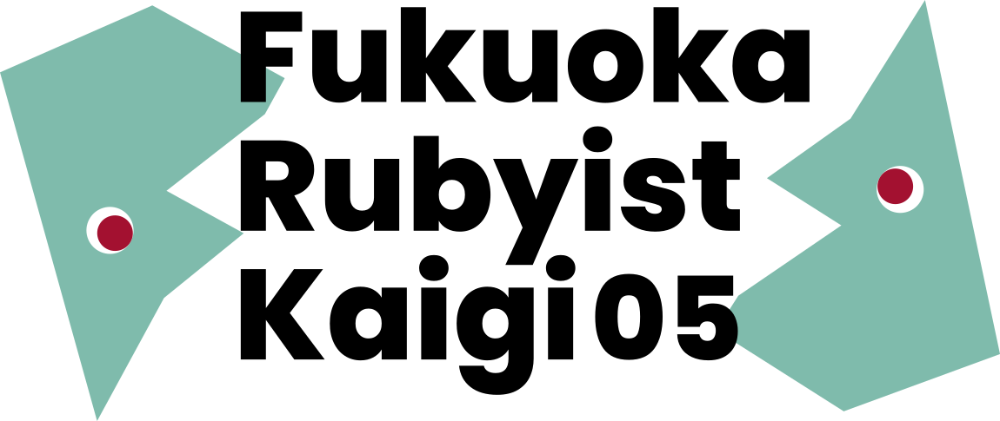
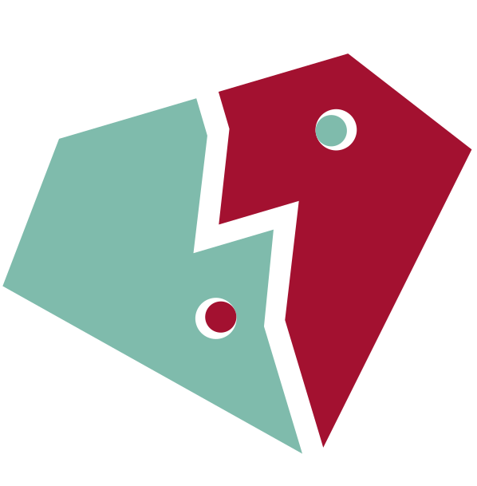

2026.02.28 Sat.
10:00–18:00
主催: Fukuoka.rb
会場: リファレンス駅東ビル３階 会議室H-2
主催: Fukuoka.rb
会場: リファレンス駅東ビル３階 会議室H-2テーマ
この一年、何をしていましたか？
Rubyを書いていた人も、別の言語や分野に挑戦していた人も
何か面白いことにハマっていた人も大歓迎。

キーノートスピーカー

東京都出身。90 年代末より豪州在住を経て近年東京へ移住。
現在はシドニーのスタートアップ企業でデータの暗号化および周辺ツールの開発に従事。
趣味として「ゲーム機で Ruby を動かす」というテーマで各種プロジェクトを展開中。

Rubyist, SQL ファンです。
RubyKaigi などで期間限定シェアハウス『やんちゃハウス』の主催をしたり、毎日自宅の屋上で撮った VLOG を YouTube に投稿したりしています。
普段は GMO ペパボ株式会社で分析向けのデータ基盤を育む仕事をしています。
パネリスト
Panel Discussion：「コミュニティの垣根を越えよう」

from PHP community

from HAKATA.swift
and more...
後援